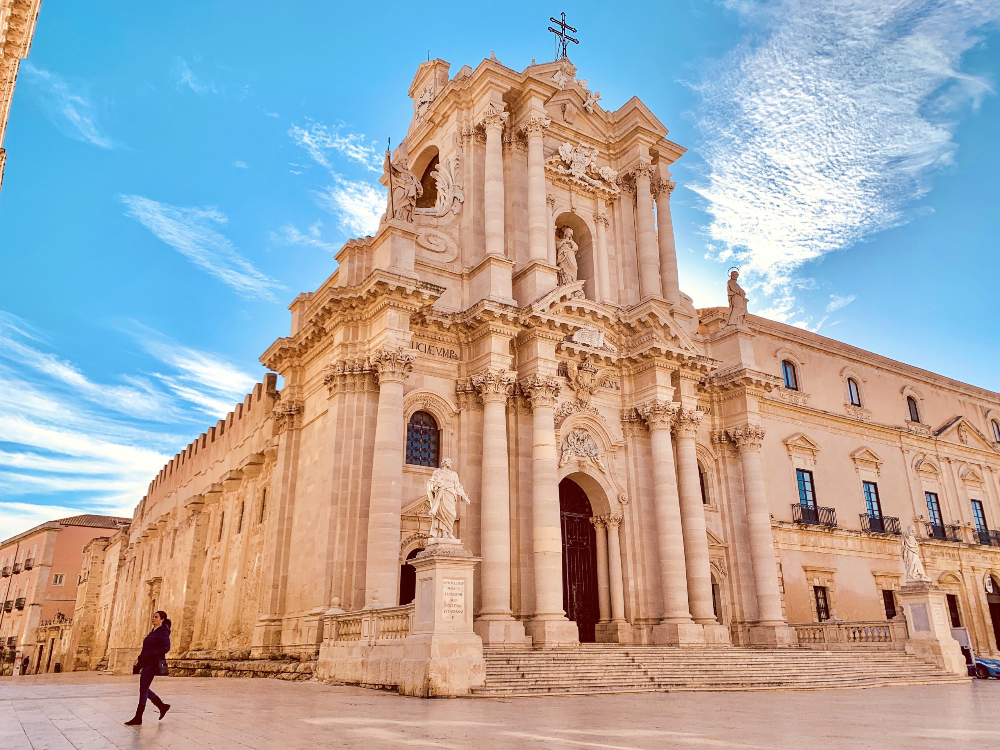

Piazza Duomo
Provincia di Siracusa (Ortigia)

Contesto Urbano ed Evoluzione
Collocata nel punto più alto e centrale dell'isola di Ortigia, il nucleo di Siracusa, questa piazza rappresenta un'opera d'arte urbanistica unica al mondo per la sua straordinaria stratificazione storica. È stata inserita nell'archivio come scelta per dimostrare come uno spazio pubblico possa evolversi nei millenni senza mai perdere la propria centralità e sacralità, fondendo le rigide geometrie greche con il fasto del barocco siciliano.
La piazza si presenta come un arioso rettangolo allungato e leggermente curvo, interamente pavimentato in pietra bianca calcarea che riflette la luce marina creando un suggestivo effetto di "teatro a cielo aperto". Il fulcro visivo e spirituale è la Cattedrale della Natività di Maria Santissima, la cui facciata settecentesca ingloba e custodisce al suo interno le colonne doriche del preesistente Tempio di Atena del V secolo a.C.
Attorno alla cattedrale si articolano altri edifici monumentali di immenso pregio, come il Palazzo Beneventano del Bosco, il Palazzo del Senato e la Chiesa di Santa Lucia alla Badia.
Dal punto di vista sociale, la piazza è il magnete turistico e culturale della città, dove la comunità locale e i visitatori si ritrovano per contemplare la straordinaria armonia dell'architettura circostante.